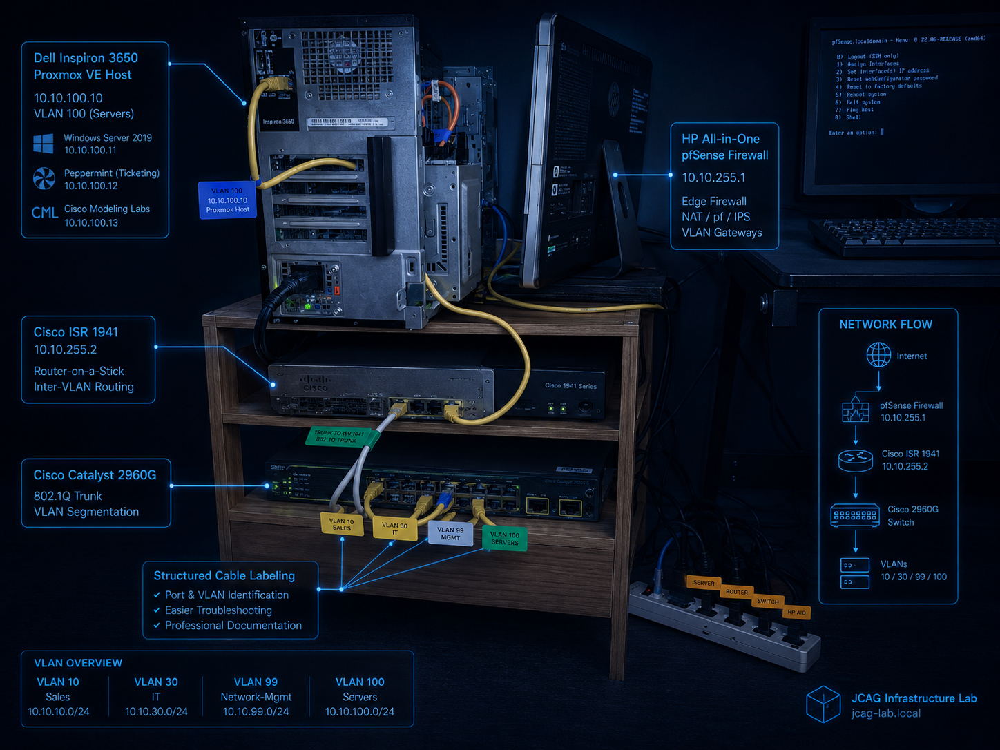

Enterprise Core Infrastructure Deployment
Foundational enterprise infrastructure environment focused on Cisco routing & switching, VLAN segmentation, Active Directory, centralized network services, firewall integration, and operational infrastructure management.
Infrastructure Evolution
Server Upgrade & Network Device Deployment

NOTE: Image is AI enhanced from an original image capture
Upgraded Inspiron 3650
Upgraded Inspiron 3650 desktop to host Proxmox VE.
- Storage upgrade: 500GB SSD / 2X 1TB HDD
- RAM upgrade: 8GB to 16GB
- Phase 1 servers on Proxmox: Windows Server 2019, Peppermint, CML

NOTE: Image is AI enhanced from an original image capture
Network Device Integration
Devices connectivity and traffic flow.
- Cisco ISR 1941 Router (Layer 3)
- Cisco Catalyst 2960G Switch (Layer 2)
- HP-All-in-One (pfSense firewall)
- Inspiron 3650 (Proxmox VE)
Enterprise Infrastructure Foundation
Phase 1 establishes the enterprise core infrastructure layer including Layer 2/Layer 3 networking, VLAN segmentation, Active Directory services, DHCP, DNS, firewall integration, centralized management networks, and endpoint connectivity.
Infrastructure Objectives
- Establish production-style VLAN segmentation
- Implement centralized identity services
- Deploy enterprise switching & routing
- Prepare virtualization-ready infrastructure
- Create scalable security boundaries
- Standardize operational documentation
Deployment Scope
- Cisco ISR 1941 edge routing
- Catalyst switching infrastructure
- pfSense firewall integration
- Windows Server 2019 services
- Enterprise VLAN segmentation
- Endpoint & management networks
Infrastructure Statistics
VLANs
4 Operational Networks
Switch/Router
Inter-VLAN Routing
Servers
AD / DNS / DHCP Services
Firewall
pfSense Traffic Policies
Endpoints
Windows & Linux Systems
VLAN Architecture & Traffic Isolation
| VLAN | Purpose | Subnet | Gateway |
|---|---|---|---|
| VLAN 10 | Sales Network | 10.10.10.0/24 | 10.10.10.1 |
| VLAN 30 | IT Administration | 10.10.30.0/24 | 10.10.30.1 |
| VLAN 99 | Management Network | 10.10.99.0/24 | 10.10.99.1 |
| VLAN 100 | Server Infrastructure | 10.10.100.0/24 | 10.10.100.1 |
Core Infrastructure Assets
Networking Infrastructure
- Cisco ISR 1941 Router
- Catalyst 2960G Switches
- pfSense Firewall Appliance
- Enterprise VLAN Trunks
Enterprise Services
- Windows Server 2019
- Active Directory Domain Services
- DNS & DHCP Infrastructure
- SMB File Services
Enterprise Traffic Flow
Enterprise Security Baseline
Network Security
- VLAN segmentation
- Port security controls
- Administrative isolation
- Firewall access policies
Infrastructure Security
- Centralized authentication
- Controlled management access
- Endpoint telemetry collection
- Infrastructure monitoring